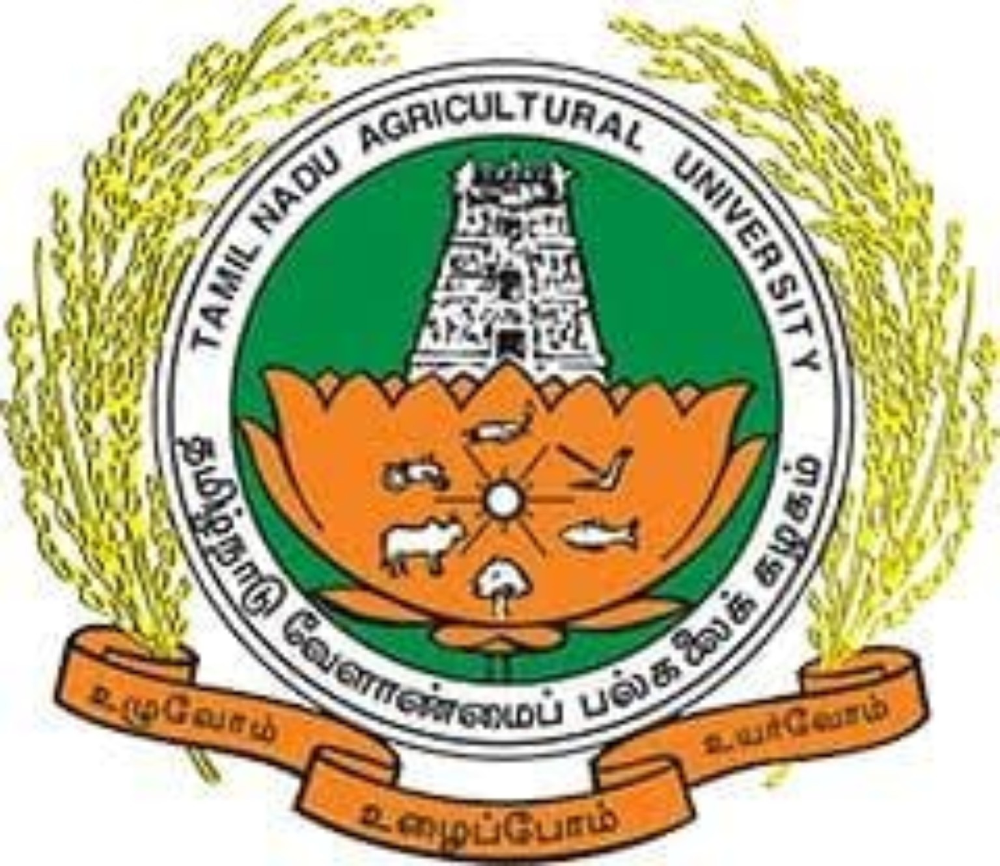
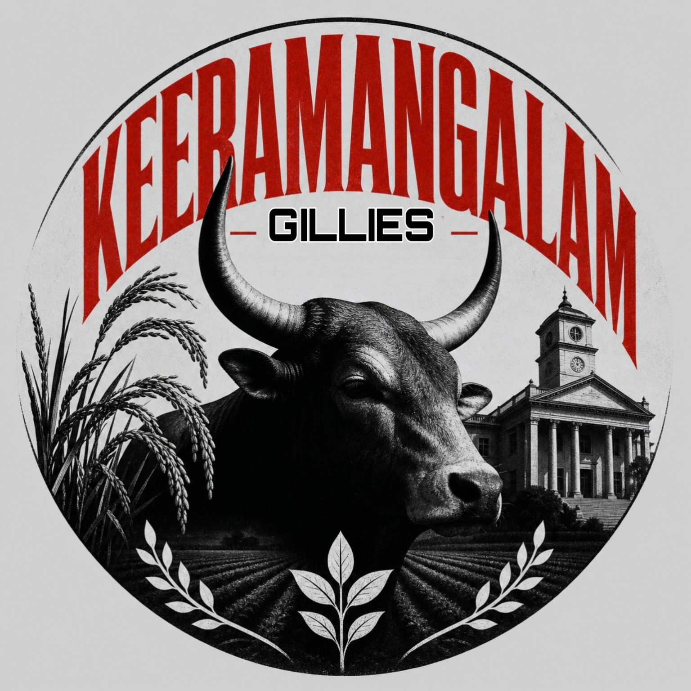
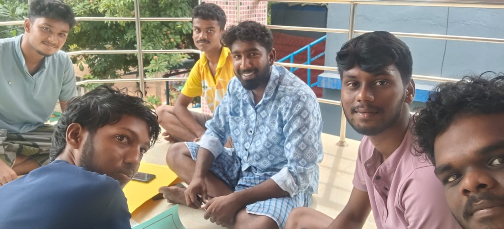
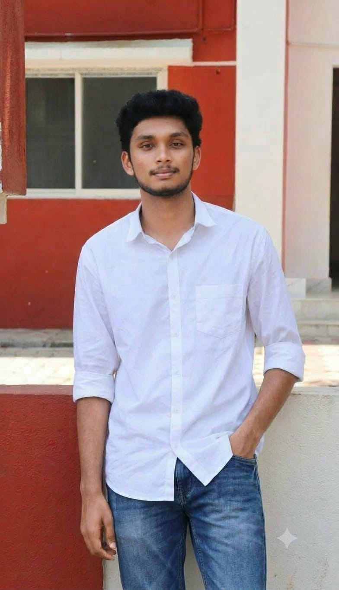

SR
SRSABEEN RAJ
B.Sc. (Hons.) Agriculture


The Rural Agricultural Work Experience Programme gives agriculture students practical exposure to farmers, farms, rural institutions and village life. This website shares selected moments from the Keeramangalam RAWE 2026 field-learning journey.
 AEX 401 · RAWE 2026 · Keeramangalam
AEX 401 · RAWE 2026 · Keeramangalam
Farmer interactions, field activities, demonstrations and village visits.
Field experiences, student activities and memories from Keeramangalam RAWE 2026.
Choose a section to explore the programme in detail.
 Student Team
Student Team
 Village Profile
Village Profile
 Field Activities
Field Activities
 Institutional Visits
Institutional Visits
 Training Programmes
Training Programmes
 Demonstrations
Demonstrations
 RAWE Reports
RAWE Reports
 Registers
Visual Learning Resources
Registers
Visual Learning Resources

Learning agriculture through village experience. RAWE is a field-oriented learning programme that connects the knowledge gained in the classroom with the realities of farming and rural life. It gives agriculture students an opportunity to learn directly from farmers, observe local agricultural systems and understand the role of rural institutions.

The programme helps students develop practical understanding, communication skills and an appreciation of farmers’ knowledge and local needs. Students observe agricultural operations, interact with farming families and learn how agricultural services and development programmes reach villages.
Understand farmers’ experiences, crop choices, production practices, constraints and local innovations through direct interaction.
Study village resources, livelihoods, infrastructure and community needs using participatory and field-based approaches.
Observe and document crop production practices, improved technologies, demonstrations and extension activities.
Understand the functions of agricultural offices, local administration, health and community institutions, markets and farmer organisations.
Field visits, farmer interviews, village surveys, participatory rural appraisal, demonstrations, training programmes and institutional visits help students connect theory with practical situations. Maintaining field notes, reports and photographic documentation also develops observation and reporting skills.
This website presents selected documentation from the AEX 401 RAWE field-learning activities at Keeramangalam, Pudukkottai District, Tamil Nadu. It brings together information about the student team, village profile, field activities, institutional visits, training programmes, demonstrations, reports and photographs.
The purpose of this documentation is to share the learning journey and acknowledge the farmers, village community members and institutions who contributed to the students’ field experience.
The Rural Agricultural Work Experience (RAWE) Programme provides agricultural students with practical exposure to farming systems, rural institutions, agricultural technologies and village development activities.
Through AEX 401, students interact with farmers, observe agricultural practices, participate in field activities and understand the functioning of rural institutions.
This website documents the field activities, demonstrations, institutional visits, training programmes and rural development experiences conducted at Keeramangalam.
Six B.Sc. (Hons.) Agriculture students participating in the AEX 401 Rural Agricultural Work Experience Programme.
SRB.Sc. (Hons.) Agriculture

ABB.Sc. (Hons.) Agriculture
 C
CB.Sc. (Hons.) Agriculture
 N
NB.Sc. (Hons.) Agriculture
 SP
SPB.Sc. (Hons.) Agriculture
 AK
AKB.Sc. (Hons.) Agriculture
Add each student's photograph to the Students folder using the exact file names shown in the upload guide.
Assistant Professor of Plant Pathology
Assistant Professor of Extension
Understanding the agricultural landscape, local resources and rural institutions of Keeramangalam, Pudukkottai District.
Keeramangalam is located in Pudukkottai district, Tamil Nadu. Agriculture and allied activities are important to the surrounding rural communities.
Keeramangalam has a tropical climate. Temperatures vary by season, with hot conditions before the monsoon and seasonal rainfall during the northeast monsoon. Check a live weather service for the current temperature.
Keeramangalam is in Alangudi Taluk, Pudukkottai District, Tamil Nadu. Use the map below to view the village location and select a point to obtain its latitude and longitude.
Population details of Keeramangalam Town Panchayat, Pudukkottai District, as provided for this profile.
Note: These are published 2011 Census / Town Panchayat profile figures, not a current population estimate.
Practical learning and village-level agricultural exposure.
No matching activities found. Try another search.
Exposure to agricultural institutions, rural services and enterprises.
Research, training, public services and rural development.
Agricultural technologies, farmer training, demonstrations and extension activities.
Agricultural research, crop improvement and technology development.
Rural healthcare services, health awareness and community welfare.
Local administration, public services and village development.
Farmer training, demonstrations and agricultural knowledge transfer.
Institutional support, financial services and agricultural credit.
Knowledge sharing and practical skill development.
Practical exposure to traditional and organic agricultural input preparation.
Preparation, fermentation and agricultural use of fish amino acid.
Training on preparation using locally available plant materials and other inputs.
Practical exposure to oyster mushroom cultivation and its benefits.
Household vegetable production and nutritional security.
Activities related to health, hygiene, nutrition and environmental awareness.
Practical demonstrations of agricultural technologies and field techniques.
Demonstration of vegetative propagation through air layering in jasmine.
Demonstration using Calotropis to improve boron-use efficiency in coconut.
Preparation and demonstration of maida solution for agricultural use.
Preparation and application awareness of egg amino acid solution.
Identification and observation of medicinal and herbal plants.
Soil health management and agricultural awareness activities.
Field observations and academic documentation.
Open a collection to view the uploaded educational charts and working models used during RAWE learning and demonstrations.
Upload chart images into the Charts folder and model photographs into the Models folder in the GitHub repository.
One overall gallery with separate activity folders. Select any activity to open its photographs without leaving this page.


Browse every uploaded photo from all activity folders in one place.
New folders and photographs added to the repository will appear automatically after the photo-gallery workflow finishes. No index.html editing is needed for future photo uploads.
Video documentation of field activities, demonstrations, farmer interactions and institutional visits.
Loading RAWE videos…
To add videos, upload them into the Videos folder and update Videos/video-manifest.json. Large videos are better hosted on an approved video platform and embedded here.
Public viewing of records with administrator-only entry and editing.
Visitors can view published entries. Only the authorised administrator can add, edit or upload records.
Register records will appear here after database setup.
Read-only access to reports, photo documentation and field notes. Only authorised website administrators can add or change files in the GitHub repository.
Visitors can view files in this section. There are no visitor upload, edit or delete controls. Add new files to the matching folders in your GitHub repository to update this section.
AEX 401 – Rural Agricultural Work Experience Programme (0+20)
Academic Year: 2026
Keeramangalam, Pudukkottai District, Tamil Nadu